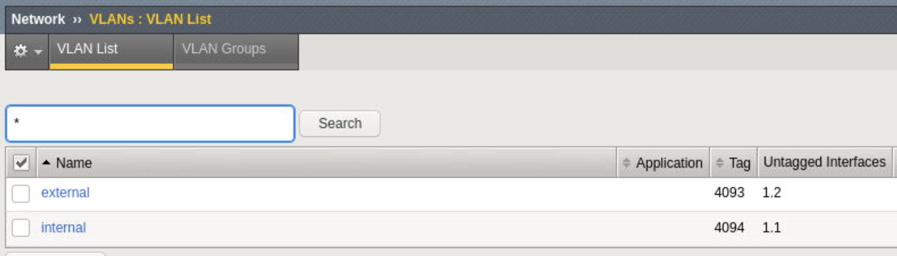
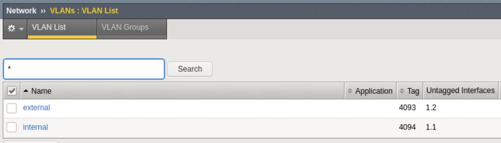

F5 and Hashicorp Basics > F5 Automation With Terraform > Lab 1 - Basic BIG-IP Administration with Terraform Source |
BIG-IP Onboarding wtih DO (Declarative Onbarding)¶
In this section you will configure basic network configurations like NTP, DNS, and interface IP addresses.
Create bigip1.do.json json declaration
touch bigip1.do.json- use vscode to add the following code to bigip1.do.json
{ "$schema": "https://raw.githubusercontent.com/F5Networks/f5-declarative-onboarding/master/src/schema/latest/base.schema.json", "schemaVersion": "1.12.0", "class": "Device", "async": true, "label": "LTM declaration for declarative onboarding", "Common": { "class": "Tenant", "mySystem": { "class": "System", "hostname": "bigip1.f5demos.com", "cliInactivityTimeout": 1200, "consoleInactivityTimeout": 1200, "autoPhonehome": false }, "myDns": { "class": "DNS", "nameServers": [ "8.8.8.8", "8.8.4.4" ], "search": [ "f5demos.com" ] }, "myNtp": { "class": "NTP", "servers": [ "0.pool.ntp.org", "1.pool.ntp.org", "2.pool.ntp.org" ], "timezone": "UTC" }, "admin": { "class": "User", "userType": "regular", "password": "F5d3vops$", "shell": "bash" }, "myProvisioning": { "class": "Provision", "ltm": "nominal", "asm": "nominal" }, "internal": { "class": "VLAN", "interfaces": [{ "name": "1.1" }], "cmpHash": "dst-ip" }, "internal-self": { "class": "SelfIp", "address": "10.1.10.6/24", "vlan": "internal", "allowService": "default", "trafficGroup": "traffic-group-local-only" }, "external": { "class": "VLAN", "interfaces": [{ "name": "1.2" }] }, "external-self": { "class": "SelfIp", "address": "10.1.20.6/24", "vlan": "external", "allowService": "none", "trafficGroup": "traffic-group-local-only" }, "default": { "class": "Route", "gw": "10.1.20.1", "network": "default", "mtu": 1500 }, "dbvars": { "class": "DbVariables", "ui.advisory.enabled": true, "ui.advisory.color": "green", "ui.advisory.text": "BIG-IP1" } } }
Modify files to only deploy basic network configurations (NTP, DNS, VLANS and SELFIPs)
mv f5base.tf f5base.tfbkupmv app1.tf app1.tfbkup- use vscode to modify main.tf with the following code to use bigip_do
terraform { required_providers { bigip = { source = "F5Networks/bigip" version = "1.3.1" } } } provider "bigip" { address = "10.1.1.6" username = "admin" password = "F5d3vops$" } resource "bigip_do" "bigip1" { do_json = "${file("bigip1.do.json")}" timeout = 15 }
terraform planterraform apply -auto-approve
Note
The apply will most likely result with and error due to resource dependencies. If so, you may simply run terraform apply again. However I recommend you resolve the dependencies as hinted in the previous step to ensure consistency.
Confirm BIG-IP is now configured
- Explore BIG-IP GUI Network -> SelfIP and Vlan settings are now configured
 

Note
Bonus lab - Create json declaration for bigip2 (10.1.1.7) given external 10.1.20.7 and internal 10.1.10.7 and apply plan.
{kind=link}